The standard eigenvalue problem
Given a square matrix  of size
of size  , the standard eigenvalue problem (SEP) consists of finding eigenvalues
, the standard eigenvalue problem (SEP) consists of finding eigenvalues  and associated eigenvectors such that
and associated eigenvectors such that
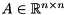
The eigenvalues are the  (potentially complex) roots of the polynomial
(potentially complex) roots of the polynomial  of degree . There is often a full set of linearly independent eigenvectors, but if there are multiple eigenvalues (i.e., if
of degree . There is often a full set of linearly independent eigenvectors, but if there are multiple eigenvalues (i.e., if  for some
for some  ) then there might not be a full set of independent eigenvectors.
) then there might not be a full set of independent eigenvectors.
Reduction to Hessenberg form
The dense matrix is condensed to Hessenberg form by computing a Hessenberg decomposition
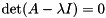
where 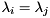 is unitary and  is upper Hessenberg. This is done in order to greatly accelerate the subsequent computation of a Schur decomposition since when working on of size , the amount of work in each iteration of the QR algorithm is reduced from
is upper Hessenberg. This is done in order to greatly accelerate the subsequent computation of a Schur decomposition since when working on of size , the amount of work in each iteration of the QR algorithm is reduced from  to flops.
to flops.
Reduction to Schur form
Starting from the Hessenberg matrix we compute a Schur decomposition
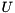
where  is unitary and
is unitary and  is upper triangular. The eigenvalues of can now be determined as they appear on the diagonal of , i.e.,
is upper triangular. The eigenvalues of can now be determined as they appear on the diagonal of , i.e.,  . For real matrices there is a similar decomposition known as the real Schur decomposition
. For real matrices there is a similar decomposition known as the real Schur decomposition
![\[ H = Q_{2} S Q_{2}^T, \]](form_39.png)
where is orthogonal and is upper quasi-triangular with 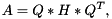 and  blocks on the diagonal. The 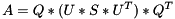 blocks correspond to the real eigenvalues and each block corresponds to a pair of complex conjugate eigenvalues.
blocks on the diagonal. The 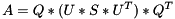 blocks correspond to the real eigenvalues and each block corresponds to a pair of complex conjugate eigenvalues.
Eigenvalue reordering and invariant subspaces
Given a subset consisting of  of the eigenvalues, we can reorder the eigenvalues on the diagonal of the Schur form by constructing a unitary matrix 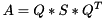 such that
of the eigenvalues, we can reorder the eigenvalues on the diagonal of the Schur form by constructing a unitary matrix 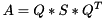 such that
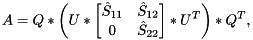
and the eigenvalues of the  block 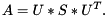 are the selected eigenvalues. The first
block 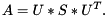 are the selected eigenvalues. The first  columns of span an invariant subspace associated with the selected eigenvalues.
columns of span an invariant subspace associated with the selected eigenvalues.
Computation of eigenvectors
Given a subset consisting of of the eigenvalues  for 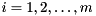 and a Schur decomposition
for 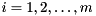 and a Schur decomposition  , we can compute for each an eigenvector
, we can compute for each an eigenvector  such that
such that  by first computing an eigenvector 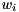 of and then transform it back to the original basis by pre-multiplication with
by first computing an eigenvector 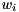 of and then transform it back to the original basis by pre-multiplication with  .
.
The generalized eigenvalue problem
Given a square matrix pencil 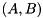, where 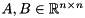, the generalized eigenvalue problem (GEP) consists of finding generalized eigenvalues and associated generalized eigenvectors such that
![\[ A v_{i} = \lambda_{i} B v_{i}, \text{ for } i = 1, 2, \dots, n. \]](form_56.png)
The eigenvalues are the (potentially complex) roots of the polynomial of degree . There is often a full set of linearly independent generalized eigenvectors, but if there are multiple eigenvalues (i.e., if for some ) then there might not be a full set of independent eigenvectors.
At least in principle, a GEP can be transformed into a SEP provided that  is invertible, since
is invertible, since
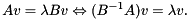
However, in finite precision arithmetic this practice is not recommended.
Reduction to Hessenberg-triangular form
The dense matrix pair  is condensed to Hessenberg-triangular form by computing a Hessenberg-triangular decomposition
is condensed to Hessenberg-triangular form by computing a Hessenberg-triangular decomposition
where 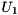 are unitary, is upper Hessenberg, and  is upper triangular. This is done in order to greatly accelerate the subsequent computation of a generalized Schur decomposition.
is upper triangular. This is done in order to greatly accelerate the subsequent computation of a generalized Schur decomposition.
Reduction to generalized Schur form
Starting from the Hessenberg-triangular pencil 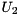 we compute a generalized Schur decomposition
![\[ H = Q_{2} S Z_{2}^H, \quad R = Q_{2} T Z_{2}^{H}, \]](form_63.png)
where are unitary and 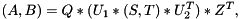 are upper triangular. The eigenvalues of can now be determined from the diagonal element pairs  , i.e.,
, i.e.,  (if 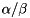). If
(if 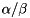). If  and 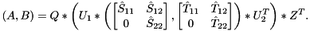, then 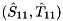 is an infinite eigenvalue of the matrix pair 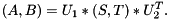. (If both 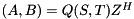 and for some 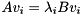, then the pencil is singular and the eigenvalues are undetermined; all complex numbers are eigenvalues). For real matrix pairs there is a similar decomposition known as the real generalized Schur decomposition
and 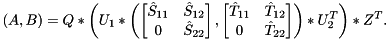, then 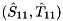 is an infinite eigenvalue of the matrix pair 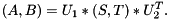. (If both 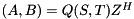 and for some 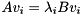, then the pencil is singular and the eigenvalues are undetermined; all complex numbers are eigenvalues). For real matrix pairs there is a similar decomposition known as the real generalized Schur decomposition
![\[ H = Q_{2} S Z_{2}^T, \quad R = Q_{2} T Z_{2}^{T}, \]](form_75.png)
where are orthogonal, is upper quasi-triangular with and blocks on the diagonal, and  is upper triangular. The blocks on the diagonal of
is upper triangular. The blocks on the diagonal of  correspond to the real generalized eigenvalues and each block corresponds to a pair of complex conjugate generalized eigenvalues.
correspond to the real generalized eigenvalues and each block corresponds to a pair of complex conjugate generalized eigenvalues.
Eigenvalue reordering and deflating subspaces
Given a subset consisting of of the generalized eigenvalues, we can reorder the generalized eigenvalues on the diagonal of the generalized Schur form by constructing unitary matrices and 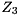 such that
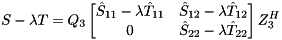
and the eigenvalues of the block pencil 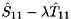 are the selected generalized eigenvalues. The first columns of spans a right deflating subspace associated with the selected generalized eigenvalues.
Computation of generalized eigenvectors
Given a subset consisting of of the eigenvalues for and a generalized Schur decomposition 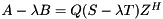, we can compute for each a generalized eigenvector such that  by first computing a generalized eigenvector of 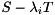 and then transform it back to the original basis by pre-multiplication with
by first computing a generalized eigenvector of 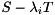 and then transform it back to the original basis by pre-multiplication with  .
.